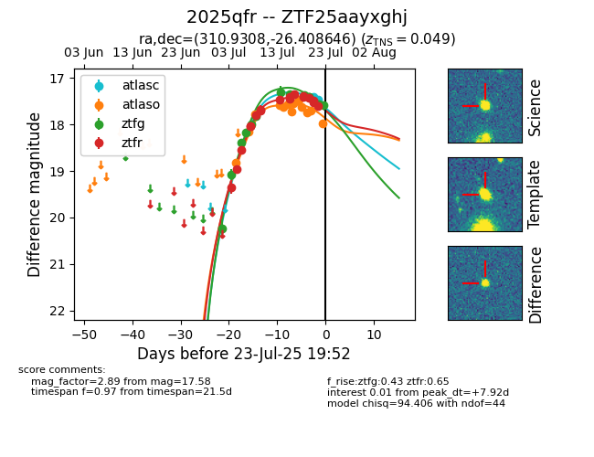

Target ZTF25aayxghj at 2025-07-23 19:52, see:
FINK: fink-portal.org/ZTF25aayxghj
Lasair: lasair-ztf.lsst.ac.uk/objects/ZTF25aayxghj
ALeRCE: alerce.online/object/ZTF25aayxghj
TNS: wis-tns.org/object/2025qfr
YSE: ziggy.ucolick.org/yse/transient_detail/2025qfr
alt names
ZTF25aayxghj (ztf,fink)
2025qfr (tns,yse)
coordinates:
equatorial (ra, dec) = (310.9308,-26.40865)
galactic (l, b) = (18.4810,-35.30335)
photometry
last atlasc=17.46, atlaso=17.98, ztfg=17.58, ztfr=17.61
2 atlasc, 13 atlaso, 15 ztfg, 18 ztfr detections
